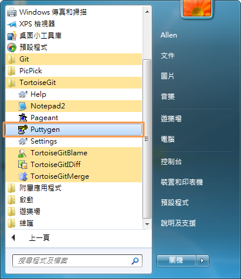
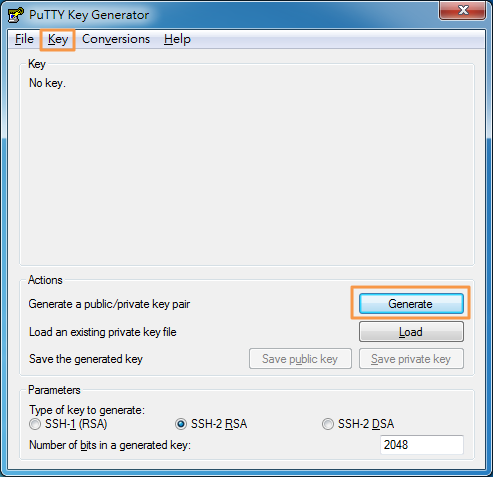
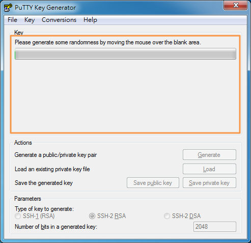

在安裝好TortoiseGit與Git後，使用此軟體建立ssh公鑰(Public Key)與私鑰(Private Key)，安裝的兩個軟體都可以建立ssh-key，使用安裝TortoiseGit附帶一起安裝的 Puttygen 建立，此方式是有圖形介面(GUI)，較容易看到所產生的內容，操作方式請參照 Puttygen建立ssh-key，如果要使用Git Bash建立ssh-key請參照 Git Bash建立ssh-key，此方式是屬於文字介面，操作方式如Windows的『命令題示字元模式』與Linux的『console模式』，但操作的指令比較像Linux的console模式。



不斷的在key的空白區塊移動滑鼠時，Process Bar的目前進度就會一直增加
當Process Bar跑完全都變綠色時，代表已完成產生ssh-key，這時key的空白區塊就會改變成顯示所產生的ssh-key